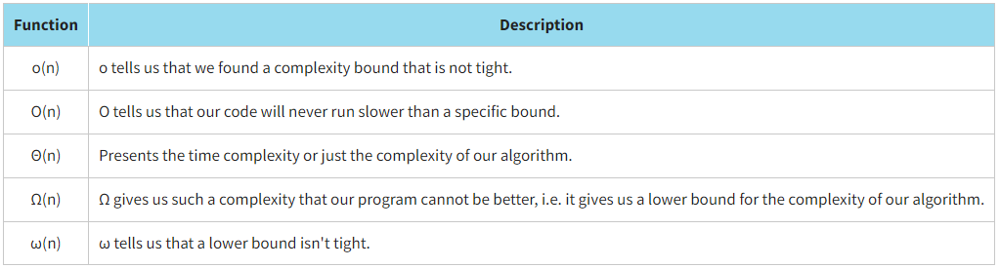

Algorithm complexity is just a way to formally measure how fast a program or an algorithm is running. This method is based on comparing two algorithms at an ideal level of performance
Complexity analysis also allows us to explain how an algorithm will behave as the input data flow increases. If our algorithm runs for one second with 100 elements at the input, then how will it behave if we double this value? Will it run as fast, half as fast, or twice as slow? In programming practice, such forecasting is quite important. Big O notation is used to describe the complexity of algorithms or to predict the effectiveness of a written block of code.
Basic rules for calculating an algorithm's Big O Notation as follows:
- Ignore constants: we are concerned only with those elements of the function that influence the order of growth. For example, ƒ(n) = 4n gives ƒ(n) = n.
- Certain terms "dominate" other terms (ignore low-order terms): we ignore low-order terms when they are dominated by high-order ones. For example, ƒ(n) = n2 + 4n + 6 gives ƒ(n) = n2.
- Some typical orders of growth are shown below:
Big O is called an asymptotic function since it takes care of the performance of an algorithm at the limit, that is, when a lot of input data is entered into it. It should also be noted that there are other asymptotic functions.
The visualization of different complexity classes can be found by the link.
Алгоритмы